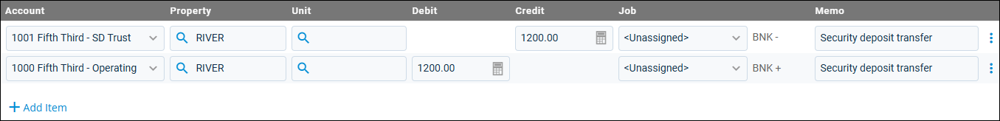

Source: https://rmxhelp.rentmanager.com/Topics/Express/Action/Journal-Add.htm
Add a Journal Entry
Journal entries are manual accounting entries that debit the balance of general ledger (GL) accounts and credit the balance of other GL accounts. These special entries can be used to correct accounting mistakes, perform money transfers between bank accounts or properties, and record the appreciation or depreciation of assets.
Warning
Rent Manager uses double-entry bookkeeping to track all accounting records. You can save a journal entry only if the debits equal credits by property. If you also include units, the debits and credits must match per unit as well.
It is recommended that only users with accounting experience use journal entries.
Related Privileges
| Group | Privilege | Column |
|---|---|---|
| Accounting | Journal entries | Add, View |
| View journal register | Enabled |
For more information, refer to Control User Access.
To add a new journal entry, do the following:
-
Go to
 arrow_forward Accounting arrow_forward Journals arrow_forward Journals.
arrow_forward Accounting arrow_forward Journals arrow_forward Journals.
The Journals page displays. -
Click
 Add Journal.
Add Journal.
The Add Journal pop-up displays. -
To fill the details from a memorized journal, click Load Memorized. To create a new journal entry, enter the following general information.
Field Description Journal
The system-generated number of the journal entry.
Rent Manager automatically generates a number to identify this journal entry. This field always displays < NEW > when creating a new journal entry.
Reference
A short note to identify the purpose of the journal entry or to record information like check numbers.
Date
The date on which this journal entry took effect.
Basis
Related Privileges
Group Privilege Column Accounting Set journal basis (cash or accrual) Enabled For more information, refer to Control User Access.
The accounting method for the journal entry (cash, accrual, or both).
Period Adjustment
Check if the journal entry is an adjusting entry. This allows you to exclude the entry from financial reports as needed.
Attachments
To attach any files, images, or documents associated with the journal entry, click Upload Files.
Memo
Additional details regarding the purpose of the journal entry transaction (e.g., Security deposit transfer).
To select a saved comment to use as the memo, click
. -
Select the GL accounts impacted by this journal entry. For each line item you need to add, click
 Add Item and enter the following information.
Add Item and enter the following information.
Field Description Account
The GL account to adjust with this journal entry.
Property
The property that this transaction is associated with.
Unit
The unit associated with the account adjustment.
Debit
The dollar amount debited to this line item's GL account. Debits increase asset and expense accounts.
Credit
The dollar amount credited to this line item's GL account. Credits increase income, equity, and liability accounts.
Job
The name of the job to track the journal entry. For more information, refer to Jobs (Page).
Related Preferences
In order to use the job costing tool in Rent Manager, Enable job costing must be checked in system preferences. For more information, refer to General Options (System Preferences).
Memo
An optional additional message regarding this account adjustment (e.g., Asset Depreciation, Security Deposit Transfer, Company Payroll). This memo applies to the line item it's added to.
-
Click Save.
The journal entry is created, and the transaction is processed for the selected GL accounts on your accounting basis.